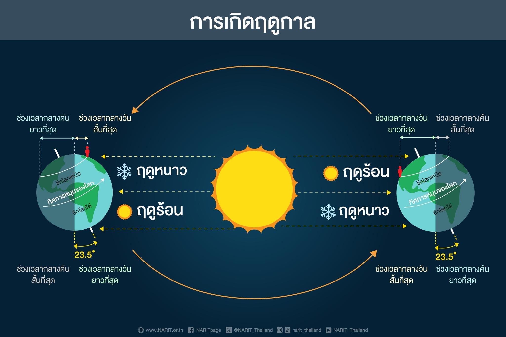

บทที่ 4: ระบบสุริยะของเรา (The Solar System)
คู่มือบทเรียนดาราศาสตร์ฉบับสมบูรณ์ตามหลักสูตรแกนกลาง สสวท. ม.3 ครอบคลุมสถาปัตยกรรมระบบสุริยะ 8 ดาวเคราะห์ กฎแรงโน้มถ่วงนิวตัน ปรากฏการณ์ฤดูกาล-ข้างขึ้นข้างแรม-น้ำขึ้นน้ำลง-อุปราคา เทคโนโลยีอวกาศยุคใหม่ และแผ่นสรุปย่อทบทวนด่วนก่อนสอบ

| เขตแดน (Zoning) | ระยะห่าง (AU) | สมาชิกหลัก | ลักษณะสำคัญ |
|---|---|---|---|
| 1. ดาวเคราะห์หินชั้นใน | 0.4 – 1.5 AU | พุธ, ศุกร์, โลก, อังคาร | พื้นผิวของแข็ง ความหนาแน่นสูง ไม่มีวงแหวน [NASA] |
| 2. แถบดาวเคราะห์น้อย | 2.3 – 3.3 AU | เศษหิน/โลหะ, ซีรีส (Ceres) | กำแพงกั้นระหว่างดาวอังคารและพฤหัสบดี มวลรวม < 1% ของโลก |
| 3. ดาวเคราะห์ยักษ์ชั้นนอก | 5.2 – 30.0 AU | พฤหัสบดี, เสาร์, ยูเรนัส, เนปจูน | แก๊สยักษ์ (H/He) + น้ำแข็งยักษ์ (H₂O/CH₄) ทุกดวงมีวงแหวนและดวงจันทร์มาก |
| 4. แถบไคเปอร์ (Kuiper Belt) | 30 – 50 AU | พลูโต, เฮาเมอา, มาคีมาคี | วงแหวนน้ำแข็งพ้นดาวเนปจูน แหล่งกำเนิด ดาวหางคาบสั้น [Ref 1] |
| 5. เมฆออร์ต (Oort Cloud) | 5,000 – 100,000 AU | ก้อนน้ำแข็งนับล้านล้านชิ้น | ทรงกลมน้ำแข็งโอบล้อมระบบสุริยะ แหล่งกำเนิด ดาวหางคาบยาว |
ระบบสุริยะโคจรรอบใจกลางดาราจักรทางช้างเผือกด้วยความเร็ว $720,000\text{ km/h}$ ใช้เวลา 230 ล้านปี ต่อการหมุนครบ 1 รอบ เรียกว่า "1 ปีดาราจักร (Galactic Year)" แปลว่าตั้งแต่ยุคไดโนเสาร์ถือกำเนิด โลกเราเพิ่งวิ่งรอบทางช้างเผือกไปได้เพียงรอบเดียวเท่านั้น! [NARIT]
*จุดเน้นสอบ:* ทำมุมห่างดวงอาทิตย์จำกัด (< 48°) จึง ไม่มีทางมองเห็นตอนเที่ยงคืนได้เด็ดขาด! จะเห็นเฉพาะเช้ามืดหรือหัวค่ำ
• ดาวเคราะห์วงนอก (Superior): อังคาร, พฤหัสบดี, เสาร์, ยูเรนัส, เนปจูน (เห็นตอนเที่ยงคืนได้)
• ดาวเคราะห์ชั้นนอก (Outer Planets): พฤหัสบดี, เสาร์, ยูเรนัส, เนปจูน (อยู่พ้นแถบดาวเคราะห์น้อยออกไป เป็นแก๊ส/น้ำแข็งยักษ์)
• ดาวแก๊สยักษ์ (Gas Giants): พฤหัสบดี, เสาร์ (ไฮโดรเจน/ฮีเลียม หนาแน่นต่ำ)
• ดาวน้ำแข็งยักษ์ (Ice Giants): ยูเรนัส, เนปจูน (น้ำ/มีเทนแช่แข็ง)

โคจรเร็วสุด (88 วัน) แกนเหล็กใหญ่ 70% ไร้บรรยากาศทำให้อุณหภูมิกลางวัน-กลางคืนต่างกันสุดขั้ว [NASA]
เรือนกระจก $CO_2$ หนา 90 เท่า ฝนกรดกำมะถัน หมุนตามเข็มนาฬิกา เห็นเป็นดาวประกายพรึก/ประจำเมือง [NARIT]
ดาวดวงเดียวที่มีสิ่งมีชีวิต น้ำของเหลว 71% ออกซิเจน 21% มีสนามแม่เหล็กหนาแน่นปกป้องรังสี [สสวท.]
ดินสนิมเหล็กแดง ที่ตั้งของ Olympus Mons สูง 21.9 km (สูงกว่าเอเวอเรสต์ 3 เท่า) มีดวงจันทร์ 2 ดวง [NASA]
หนักกว่าดาวอื่นรวมกัน 2.5 เท่า พายุจุดแดงใหญ่ มีดวงจันทร์ แกนิมีด ใหญ่ที่สุดในระบบ (ใหญ่กว่าพุธ) [ESA]
วงแหวนน้ำแข็งอลังการ ความหนาแน่น 0.687 g/cm³ ลอยน้ำได้ มีดวงจันทร์ไททันที่มีชั้นบรรยากาศหนาแน่น [JWST]
แกนเอียง 97.77° โคจรกลิ้งไปตามระนาบ บรรยากาศมีเทนสีฟ้าอมเขียว อุณหภูมิเย็นสุดขั้ว (-224 °C) [NASA]
พายุลมกรดเร็วเหนือเสียง 2,000 km/h มีดวงจันทร์ ไทรทัน โคจรสวนทางดาวแม่พร้อมน้ำพุไนโตรเจน [Ref 1]

The Great Collapse (การยุบตัวของเนบิวลาด้วยซูเปอร์โนวา) [Genesis]
เมื่อ 4,600 ล้านปีก่อน คลื่นกระแทกจากการระเบิดของดาวฤกษ์ซูเปอร์โนวาในบริเวณใกล้เคียงบีบอัดเมฆโมเลกุลแก๊สจนยุบตัวลงด้วยแรงโน้มถ่วงและหมุนวนแบนลงเป็นจานดาวเคราะห์ก่อนเกิด (Protoplanetary Disk)
Proto-Sun Ignition (การจุดฟิวชันของดวงอาทิตย์) [สสวท.]
มวลสารกว่า 99% อัดแน่นที่ใจกลางจนเกิดความร้อนและความดันวิกฤต จุดปฏิกิริยานิวเคลียร์ฟิวชันหลอมไฮโดรเจนเป็นฮีเลียม ปลดปล่อยพลังงาน กำเนิดดวงอาทิตย์
Accretion Process (การพอกพูนมวลของเศษดาวเคราะห์)
เม็ดฝุ่นในจานหมุนวนชนและเกาะตัวกันเหนียวแน่น เรียกว่าการพอกพูนมวล (Accretion) พัฒนาเป็นก้อนหินขนาดกิโลเมตร (Planetesimals) และเติบโตเป็นดาวเคราะห์
Frost Line & Planetary Zoning (แนวเส้นน้ำแข็งแบ่งเขต) [NASA]
เส้น Frost Line (~5 AU): ข้างในร้อนจนสารระเหยแข็งตัวไม่ได้ เหลือเพียงหิน/โลหะ กลายเป็นดาวเคราะห์หินขนาดเล็ก (พุธ ศุกร์ โลก อังคาร) ส่วนข้างนอกหนาวเย็นจนน้ำแข็งคงสภาพได้ แกนดาวเติบโตเร็วและดึงดูดแก๊สมาห่อหุ้ม กลายเป็นดาวแก๊สและน้ำแข็งยักษ์ (พฤหัส เสาร์ ยูเรนัส เนปจูน)
*กฎเหล็กออกสอบ:* หางดาวหางจะ ชี้หนีออกจากดวงอาทิตย์เสมอ เพราะถูกลมสุริยะและแรงดันรังสีพัดเป่า ไม่ได้ชี้ตามทิศการเคลื่อนที่
2. ดาวตก/ผีพุ่งไต้ (Meteor): ลุกไหม้ในชั้นบรรยากาศ
3. อุกกาบาต (Meteorite): เผาไหม้ไม่หมด ตกถึงพื้นผิวโลก

- ดาวพุธ (0.4 AU): โคจรเร็วที่สุดในระบบ $\approx \mathbf{47.4\text{ km/s}}$
- โลก (1.0 AU): โคจรด้วยความเร็วเฉลี่ย $\approx \mathbf{29.8\text{ km/s}}$
- ดาวเนปจูน (30.0 AU): อยู่ไกลสุด โคจรช้าเพียง $\approx \mathbf{5.4\text{ km/s}}$
- บนวงโคจรวงรี: วิ่งเร็วสุดที่จุดใกล้สุด (Perihelion) และช้าสุดที่จุดไกลสุด (Aphelion)
🧮 ตัวอย่างโจทย์คำนวณฟิสิกส์ดาราศาสตร์ ม.ต้น (Worked Examples)
สสวท. ว 3.1 ม.3/1โจทย์: หากดาวเคราะห์ดวงหนึ่งถูกย้ายตำแหน่งให้มีระยะห่างจากดวงอาทิตย์เพิ่มขึ้นเป็น 3 เท่า ของระยะเดิม แรงดึงดูดโน้มถ่วงที่ดวงอาทิตย์กระทำต่อดาวดวงนี้จะเปลี่ยนแปลงไปอย่างไร?
1. จากสมการ $$F = G\frac{m_1 m_2}{r^2} \implies F \propto \frac{1}{r^2}$$ 2. เมื่อระยะห่างใหม่ $r' = 3r$ จะได้ $$F' = \frac{1}{(3)^2} F = \frac{1}{9} F$$ คำตอบ: แรงดึงดูดโน้มถ่วงจะ ลดลงเหลือ $\frac{1}{9}$ เท่า (หรือประมาณ $11.1\%$) ของแรงดึงดูดเดิม
โจทย์: นักบินอวกาศมีมวล $60\text{ kg}$ บนโลก เมื่อเดินทางไปลงจอดบนดวงจันทร์ซึ่งมีสนามโน้มถ่วง $g_{\text{moon}} \approx \frac{1}{6} g_{\text{earth}}$ มวลและน้ำหนักของเขาจะเป็นเท่าใด?
1. มวล (Mass): เป็นปริมาณสสารคงที่ $\implies \mathbf{60\text{ kg}}$ เท่าเดิมไม่ว่าจะอยู่ที่ใด
2. น้ำหนัก (Weight): $$W = m g_{\text{moon}} = 60 \times 1.63 \approx \mathbf{98\text{ N}}$$ (ลดลงเหลือ $\frac{1}{6}$ ของโลก)
คำตอบ: มวลคงที่ $60\text{ kg}$ แต่น้ำหนักลดลงเหลือ $98\text{ นิวตัน}$


- วสันตวิษุวัต (~21 มี.ค.): ดวงอาทิตย์ตั้งฉากเส้นศูนย์สูตร เริ่มฤดูใบไม้ผลิ (กลางวัน=กลางคืน)
- ครีษมายัน (~21 มิ.ย.): ซีกโลกเหนือเอียงหาดวงอาทิตย์มากสุด กลางวันยาวนานที่สุดในรอบปี
- ศารทวิษุวัต (~22 ก.ย.): ดวงอาทิตย์ตั้งฉากเส้นศูนย์สูตร เริ่มฤดูใบไม้ร่วง (กลางวัน=กลางคืน)
- เหมายัน (~22 ธ.ค.): ซีกโลกเหนือเอียงหนีดวงอาทิตย์มากสุด กลางคืนยาวนานที่สุดในรอบปี
• น้ำเกิด (Spring Tide): วันจันทร์ดับ & วันเพ็ญ (ขึ้น/แรม 15 ค่ำ) ดวงอาทิตย์-โลก-ดวงจันทร์ เรียงเป็นเส้นตรงเดียวกัน แรงโน้มถ่วงเสริมกัน → น้ำขึ้นสูงสุดและลงต่ำสุด
• น้ำตาย (Neap Tide): วันขึ้น/แรม 8 ค่ำ ดวงจันทร์ ทำมุมตั้งฉาก $90^\circ$ กับดวงอาทิตย์ แรงดึงดูดหักล้างกัน → ระดับน้ำขึ้น-ลงแตกต่างกันน้อยที่สุด

ดวงอาทิตย์ → ดวงจันทร์ → โลกดวงจันทร์บังดวงอาทิตย์ ทอดเงาลงบนผิวโลก (เงามืด = เต็มดวง / เงามัว = บางส่วน)
ดวงอาทิตย์ → โลก → ดวงจันทร์โลกบังแสงอาทิตย์ ดวงจันทร์โคจรผ่านเข้าไปในเงาของโลก (เห็นได้พร้อมกันทั้งซีกโลกกลางคืน)
ในยุคปัจจุบัน การสำรวจดาราศาสตร์ไม่ได้หยุดอยู่เพียงแค่การส่องกล้องดูผิวดาว แต่กำลังมุ่งเป้าไปที่ "การค้นหาสิ่งมีชีวิตต่างดาวใต้ผืนน้ำแข็ง" และ "ระบบป้องกันภัยพิบัติจากอวกาศ" ซึ่งเป็นหัวข้อฟิสิกส์ดาราศาสตร์สมัยใหม่ที่สำคัญ:


🚀 3 ภารกิจหลักในการตามล่ามหาสมุทรและสัญญาณชีพต่างดาว
มีเป้าหมายพิสูจน์ว่าใต้เปลือกน้ำแข็งหนาของยูโรปามีมหาสมุทรน้ำเค็มที่เอื้อต่อสิ่งมีชีวิตหรือไม่ ติดตั้งเรดาร์ REASON ยิงทะลุแผ่นน้ำแข็งลึก 30 km และเครื่องตรวจ SUDA ดักจับเซลล์สิ่งมีชีวิตในละอองน้ำพุที่พุ่งขึ้นมา
ยานขององค์การอวกาศยุโรป ออกแบบมาเพื่อรับมือกับสภาพแสงแดดที่ริบหรี่รอบดาวพฤหัสบดี (มีแสงเพียง 3% ของโลก) ด้วยแผงโซลาร์เซลล์ขนาดมหึมา 85 ตร.ม. เพื่อสำรวจแกนิมีดซึ่งเป็นดวงจันทร์เดียวที่มีสนามแม่เหล็กในตัวเอง
กล้องโทรทรรศน์อวกาศอินฟราเรดยุคใหม่ ตรวจพบสารประกอบคาร์บอน (Carbon Source) บนผิวดวงจันทร์ยูโรปา และตรวจพบพวยไอน้ำ (Water Plume) พุ่งสูงกว่า 9,600 km บนดวงจันทร์เอนเซลาดัสของดาวเสาร์
🛡️ เกราะป้องกันธรรมชาติ 2 ชั้น และภารกิจพิทักษ์โลก
| ดาวเคราะห์ | ประเภท | ระยะห่าง | จุดเด่นความเป็นที่สุด | จุดที่ข้อสอบชอบถาม |
|---|---|---|---|---|
| ☿ พุธ | หินชั้นใน | 0.4 AU | เล็กสุด, โคจรเร็วสุด (88 วัน) | ไม่มีบรรยากาศ / ฉายา "เตาไฟแช่แข็ง" / ไม่มีดวงจันทร์ |
| ♀ ศุกร์ | หินชั้นใน | 0.7 AU | ร้อนที่สุด (465°C) | เรือนกระจก $CO_2$ หนา 90 เท่า / หมุนตามเข็มนาฬิกา / ไม่มีดวงจันทร์ |
| ♁ โลก | หินชั้นใน | 1.0 AU | หนาแน่นที่สุด (5.51 g/cm³) | ดาวดวงเดียวที่มีสิ่งมีชีวิต / มีน้ำ 71% / ออกซิเจน 21% |
| ♂ อังคาร | หินชั้นใน | 1.5 AU | ภูเขาไฟสูงที่สุด (Olympus Mons) | ดินสนิมเหล็กแดง / ดวงจันทร์ 2 ดวง (โฟบอส, ดีมอส) |
| ♃ พฤหัสบดี | แก๊สยักษ์ | 5.2 AU | ใหญ่สุด & มวลมากสุด (318 เท่า) | พายุจุดแดงใหญ่ / ดวงจันทร์แกนิมีดใหญ่กว่าดาวพุธ |
| ♄ เสาร์ | แก๊สยักษ์ | 9.5 AU | ความหนาแน่นต่ำสุด (0.687 g/cm³) | ลอยน้ำได้ / วงแหวนสวยสุด / ไททันมีบรรยากาศหนา |
| ♅ ยูเรนัส | น้ำแข็งยักษ์ | 19.6 AU | บรรยากาศเย็นที่สุด (-224°C) | แกนเอียง 98° (กลิ้งตะแคงข้าง) / บรรยากาศมีเทนสีฟ้า |
| ♆ เนปจูน | น้ำแข็งยักษ์ | 30.0 AU | ลมพายุแรงที่สุด (2,000 km/h) | ดวงจันทร์ไทรทันโคจรสวนทาง / ไกลสุดในระบบสุริยะ |
• ข้างนอกหนาว → ดาวแก๊ส & น้ำแข็งยักษ์ (พฤหัส เสาร์ ยูเรนัส เนปจูน)
• น้ำตาย: ขึ้น/แรม 8 ค่ำ (ตั้งฉาก $90^\circ$ ระดับน้ำต่างกันน้อยสุด)
• เฮลิโอสเฟียร์ 120 AU: กันรังสีคอสมิกจากนอกดาราจักร
🎯 ทบทวนเนื้อหาแน่นแล้ว พร้อมลุยข้อสอบ 20 ข้อ!
ท้าทายความเข้าใจด้วยคลังข้อสอบดาราศาสตร์ ม.ต้น 20 ข้อ พร้อมระบบ Gamification นับคะแนนสดและเฉลยละเอียดทุกข้อในหน้าข้อสอบแยกเดี่ยว
เนื้อหา ตัวเลขสถิติ และภาพกราฟิกทั้งหมดในบทเรียนนี้ ได้รับการสังเคราะห์และตรวจสอบความถูกต้องทางดาราศาสตร์จากสถาบันการศึกษาและองค์กรอวกาศชั้นนำระดับโลก:
สถาบันส่งเสริมการสอนวิทยาศาสตร์และเทคโนโลยี (สสวท.) — แหล่งอ้างอิงหลักสูตรแกนกลางวิทยาศาสตร์ ม.ต้น ประเทศไทย
สถาบันวิจัยดาราศาสตร์แห่งชาติ (องค์การมหาชน) — ข้อมูลมุมห่างเชิงมุม ปรากฏการณ์ดาวเคียงเดือน อุปราคา และดาราศาสตร์ไทย
National Aeronautics and Space Administration — ข้อมูลสถิติเชิงกายภาพ ความหนาแน่น ชั้นบรรยากาศ และฟิสิกส์ดวงอาทิตย์
ศูนย์ข้อมูลภารกิจสำรวจมหาสมุทรใต้แผ่นน้ำแข็งดวงจันทร์ยูโรปา รายละเอียดเรดาร์ REASON และเครื่องตรวจวิเคราะห์มวลสาร SUDA
European Space Agency — รายงานเทคโนโลยีแผงโซลาร์เซลล์ 85 ตร.ม. และภารกิจสำรวจดวงจันทร์แกนิมีดรอบดาวพฤหัสบดี
Space Telescope Science Institute — การค้นพบสารประกอบคาร์บอนบนผิวยูโรปาและพวยไอน้ำ 9,600 km บนเอนเซลาดัส
สารานุกรมฟิสิกส์ดาราศาสตร์ — แบบจำลองการยุบตัวของเนบิวลา เส้น Frost Line และวิวัฒนาการ 4.6 พันล้านปี
รายงานผลการพุ่งชนดาวเคราะห์น้อย Dimorphos เพื่อทดสอบการเบี่ยงเบนวงโคจรป้องกันโลกจากภัยพิบัติอวกาศ